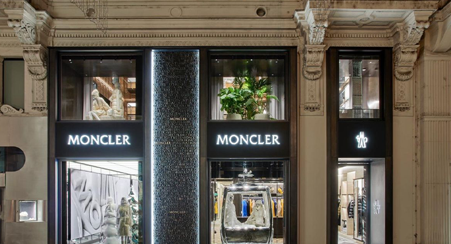

Business question: How should Moncler accelerate
long-term, high-margin growth by optimising the balance between
DTC vs wholesale and regional expansion (Asia, EMEA,
Americas)?
This project implements Option C – Financial Performance & Trends
from the module brief. It analyses Moncler Group’s revenue growth,
channel mix and regional performance using publicly available financial
data, with a particular focus on the DTC-driven luxury outerwear
franchise.
The dashboard below uses revenue and store network data from Moncler
Group’s Q1 2025 interim management statement, half-year 2022–2024
report, and 9M 2025 interim statement. All data has been extracted
into CSV files and processed in Python, then embedded directly in this
one-page BI site.
Key financial findings (Option C – Performance & Trends)
Growth has normalised: After a strong 2022–2024, Q1 2025 shows low single-digit revenue growth, signalling resilience but a cooler demand environment.
DTC now dominates: Around 87% of Moncler Q1 2025 revenue comes from Direct-to-Consumer, with wholesale being deliberately reduced.
Asia is the growth engine: Asia now represents just over half of Moncler brand revenue, while EMEA is softer and the Americas are smaller but stabilising.
Store expansion is selective: Moncler and Stone Island mono-brand stores are concentrated in Asia and key tourist hubs, supporting a premium, DTC-led model.
Digital funnel has upside: Scenario analysis shows that small improvements in product-view and checkout conversion can create meaningful incremental revenue without large store growth.

Q1 2025 Group Revenue
€829m
+1% vs Q1 2024 (CFX)
Q1 2025 Moncler Brand
€721.8m
+2% YoY (CFX)
Q1 2025 DTC Share (Moncler)
87%
DTC +4% YoY · Wholesale -5%
Monobrand Stores (Mar-25)
Moncler 294 · SI 92
Selective, Asia-led expansion
1. Half-year revenue trend 2022-2024
Source: 2022–2024 Half-year income statement
Steady growth with a clear step-up in H2 2024 – important for
setting realistic revenue scenarios for 2025.
2. Q1 2025 revenue by brand
Group vs Moncler vs Stone Island
Confirms that the strategic growth question is overwhelmingly about
the Moncler brand: ~87% of Group revenue in Q1 2025.
3. Moncler Q1 revenue by geography
Asia, EMEA, Americas – 2024 vs 2025
Asia is now just over half of Moncler revenue; EMEA is soft, and
Americas is small but stabilising.
Select a region to highlight its year-on-year growth and contribution.
4. Q1 2025 Moncler revenue by channel
DTC vs Wholesale – with DTC split into boutiques vs online
DTC now contributes ~87% of Moncler Q1 sales, with wholesale being
deliberately reduced to protect brand equity.
5. Mono-brand store network (Mar-25)
Number of stores by region and brand
Store network data supports a strategy of Asia-led DTC growth while
keeping wholesale tightly controlled.
6. DTC digital funnel – scenario
Illustrative visits → views → carts → purchases
This funnel uses Moncler’s DTC revenue as a base and applies typical
luxury conversion rates to model the upside from improving each step.
The story behind the data
Why this analysis matters (Option C)
The analysis shows that Moncler has kept revenue broadly stable while
deliberately reshaping its growth model:
Descriptive: Half-year trends highlight a strong H2
2024, showing that demand is resilient when product and execution
align.
Diagnostic: Regional and channel splits show that
Asia + DTC are the core growth engine, while wholesale and
EMEA act as drag on YoY growth.
Predictive: A simple linear regression on half-year
revenues (documented in the Python notebook) suggests modest
mid-single-digit growth if current trends continue.
Prescriptive: Scenario analysis around the digital
funnel and DTC share indicates that even small increases in conversion
or DTC mix generate meaningful incremental EBIT, without aggressive
store expansion.
Recommended actions: (i) Continue to grow DTC in Asia
and high-productivity tourist locations; (ii) selectively reduce
wholesale exposure in under-performing EMEA doors; (iii) invest in
digital product discovery and conversion, as illustrated by the funnel
scenario; and (iv) use the store network as a brand accelerator rather
than a pure volume lever.
Limitations, risks & next steps
Interpreting the financial performance lens
Key limitations
The analysis relies on a relatively short history (H1 2022–H1 2024 and
Q1/9M 2025), which makes any forecast indicative rather than a
long-term trend.
Revenue is available by brand, region and channel, but detailed gross
margin and operating profit by segment are not disclosed, so profitability
is inferred using mix rather than explicit P&L data.
The DTC split between boutiques and online, and the digital funnel
conversion rates, are based on documented industry ranges and stated as
assumptions rather than official Moncler guidance.
Risks & watchpoints
Over-reliance on Asian demand, particularly China and tourist flows, could
create downside risk if macro conditions weaken or travel normalises.
Ongoing wholesale “clean-up” supports brand equity but temporarily weighs
on reported growth, especially in EMEA.
DTC and digital investments require disciplined cost control; otherwise
margin expansion may lag revenue growth.
Next analytical steps
Extend the dataset once FY 2025 and FY 2026 results are published and
re-estimate the trend model.
Incorporate gross margin by channel/region if available, to move from
revenue focus to a more complete profitability picture.
Benchmark Moncler against key peers (e.g. Canada Goose, larger luxury
groups) on DTC share, store productivity and digital penetration.
Technical documentation & use of AI
Data, tools, and workflow
Data sources & governance
Company filings: Moncler Group Q1 2025 Interim
Management Statement, Half-year Financial Report 2022–2024, and 9M
2025 Interim Management Statement.
Numerical tables were manually transcribed into Excel and exported as
CSV files:
2.1_brand_revenues.csv,
2.2_revenue_by_geography.csv,
2.3_revenue_by_channel.csv,
2.4_store_network.csv,
2.5_halfyear_revenues_2022_2024.csv.
No personal data is used; therefore GDPR concerns are minimal. All
figures are public, attributed, and traceable back to Moncler’s
investor documents.
Tools & analytical approach
Python:pandas for data cleaning and
aggregation, matplotlib for exploratory charts, and
scikit-learn for a simple linear regression on half-year
revenues (2022–2024) to generate an indicative 2025 forecast.
Visualisation: Chart.js is used here in the final BI
artefact. All values in the charts below are embedded directly in the
script as the final, cleaned outputs of the Python notebook.
The notebook is structured into descriptive, diagnostic, predictive,
and prescriptive blocks, each commented so that the analysis is
reproducible.
Reflection on using AI (200–300 words)
I used AI (ChatGPT) in a limited and supportive capacity during this assignment. The majority of the work—including defining the business problem,
selecting relevant Moncler data, interpreting financial disclosures, and forming analytical conclusions—was completed independently.
AI was primarily used as a technical aid. It helped resolve minor Python coding issues, such as fixing errors related to column naming or groupby logic,
and provided guidance on basic code structure where needed. It also assisted at a high level with presentation and notebook layout, particularly in
suggesting clear ways to organise analytical sections and visual outputs. These contributions were incremental and did not influence the core analytical
thinking.
All strategic decisions, including identifying meaningful revenue splits, evaluating data limitations, designing scenarios, and interpreting results,
were based on my own understanding of the Moncler business model and the assignment requirements. AI did not generate insights, select data, or determine conclusions.
Overall, AI functioned as a supplementary tool to improve efficiency and technical accuracy, while the analysis, judgement, and recommendations reflect my own work and understanding..